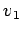
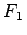
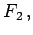
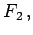

Inhalt Index DeskTop Bronstein

 Algebra und Diskrete Mathematik Algorithmen der Graphentheorie Durchlaufungen von ungerichteten Graphen Eulersche Linien
Algebra und Diskrete Mathematik Algorithmen der Graphentheorie Durchlaufungen von ungerichteten Graphen Eulersche Linien


Ist G ein EULERscher Graph, dann wähle man einen beliebigen Knoten v1 in G und konstruiere, ausgehend von , einen Kantenzug , den man nicht mehr fortsetzen kann. Enthält F1 noch nicht alle Kanten von  so bilde man ausgehend von einem Knoten v2, der von F1 durchlaufen wird und in G mit einer nicht in F1 enthaltenen Kante indiziert, einen Kantenzug  den man nicht mehr fortsetzen kann. Die beiden Kantenzüge F1 und F2 setze man zu einem geschlossenen Kantenzug von G zusammen, indem man von v1 aus F1 bis v2 durchläuft, von v2 aus ganz F2 durchläuft, und danach über die noch nicht benutzten Kanten von F1 den Kantenzug zu v1 fortsetzt. Eine Fortsetzung des Verfahrens liefert nach endlich vielen Schritten eine geschlossene EULERsche Linie.
so bilde man ausgehend von einem Knoten v2, der von F1 durchlaufen wird und in G mit einer nicht in F1 enthaltenen Kante indiziert, einen Kantenzug  den man nicht mehr fortsetzen kann. Die beiden Kantenzüge F1 und F2 setze man zu einem geschlossenen Kantenzug von G zusammen, indem man von v1 aus F1 bis v2 durchläuft, von v2 aus ganz F2 durchläuft, und danach über die noch nicht benutzten Kanten von F1 den Kantenzug zu v1 fortsetzt. Eine Fortsetzung des Verfahrens liefert nach endlich vielen Schritten eine geschlossene EULERsche Linie.